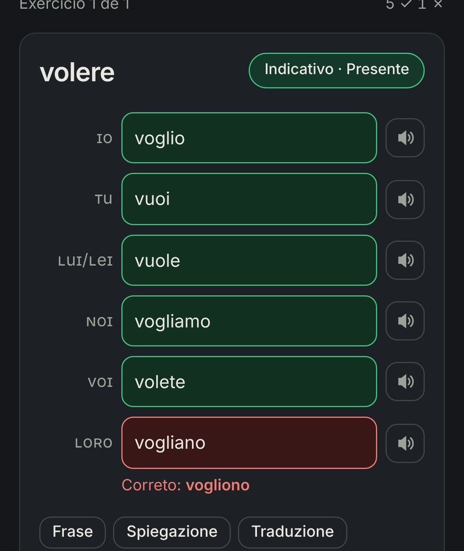

Coniugatore
ConiugatoreOs verbos italianos, treinados até sair sem pensar.

Monte o treino do seu jeito
Filtre por -are, -ere, -ire, regulares, irregulares ou reflexivos, procure um verbo pelo nome e marque só os tempos que quer praticar.

Ouça como se fala
Depois de verificar, toque no alto-falante e ouça a forma certa em italiano. Na tabela completa, um toque no título lê o tempo inteiro.

Leia a frase, ache o infinitivo
No Reverso, aparece uma frase com o verbo conjugado em destaque e você escreve o infinitivo. Em Ambos, depois do infinitivo vem a conjugação do mesmo verbo.

Estude dirigindo
O app fala o verbo e o tempo, você responde em voz alta e ele diz a forma certa. Dá para avançar pelo botão do volante, sem olhar a tela.

Veja onde errou e treine de novo
No fim sai o relatório verbo por verbo. O filtro “errei nas 3 últimas” monta o próximo treino só com o que escapou.

Consulte qualquer verbo
A aba Tabelas mostra a conjugação completa dos 2.294 verbos, com o auxiliar, o nível e a tradução. Tudo em português ou em italiano.

Deslize para o lado ou use as setas